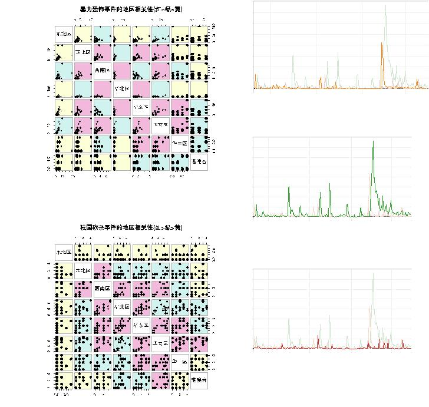

|

图
6:
暴恐事件空间传播变化规律
图
7:
校园砍杀事件空间传播变化规律
关性较小。东北地区和西北地区均属于中国的边境地
区，因此相关性与其他地区相关性较小，而港澳台地
区由于经济体制与大陆不同，因此与大陆地区关联并
不大。然而我们发现，西北地区与西南地区相关性较
高，港澳台地区与华南地区相关性较高，这是因为地
理位置较为临近所致，类似的有华中区与华南区、华
东区相关性较高。
此外，西南区、华北区、华东区、华南区四省之间
的相关性较高，而我们发现这四个地区有一些共同特
征：每个地区都包含一个特大型城市，直辖市或者是
经济高度发达城市，而且这些地区普遍经济水平在全
国处于前列。
13年10月1日
13年12月1日
14年2月1日
14年4月1日
日期
0
500
1000
1500
2000
2500
3000
3500
4000
报
道次数
图
8:
公交车爆炸事件媒体传播随时间变化规律
13年10月1日
13年12月1日
14年2月1日
14年4月1日
日期
0
500
1000
1500
2000
2500
3000
3500
4000
报
道次数
图
9:
暴恐事件媒体传播随时间变化规律
13年10月1日
13年12月1日
14年2月1日
14年4月1日
日期
0
500
1000
1500
2000
2500
3000
3500
4000
报
道次数
图
10:
校园砍杀事件媒体传播随时间变化规律
由以上分析我们得出如下结论：(1)边境地区危害
公共安全事件的发生与其他地区相关性较小；(3)地理
空间上相邻地区相关性较高；(3)政治中心、经济中心
危害公共安全事件的发生特点具有较高的相关性。
(3)新闻媒体传播：报导数、报导篇幅、媒体数、评
论数。
首先我们做如下定义：当日媒体报导量超过200的
危害公共安全事件称为大事件，而日媒体报导量小
于200的事件称为小事件。
由图??∼??中三类危害公共安全时间新闻媒体传
播量随时间变化规律图，我们可以发现，在没有大事
件发生时，往往在全国范围内很少有危害公共安全事
件的发生，即使有也是程度很小的事件(日媒体报道量
小于10)。然而当发生一起大事件时，新闻媒体会把这
件事件以很快的速度传播到全国各地，而这种媒体的
传播会带动同系列事件的发生，甚至会触发另一起大
|